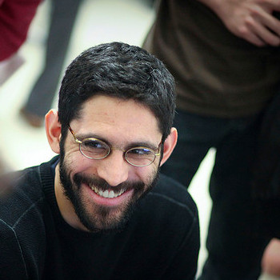
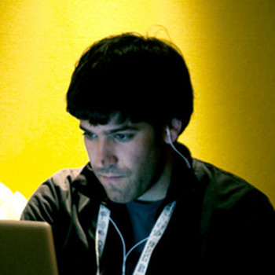
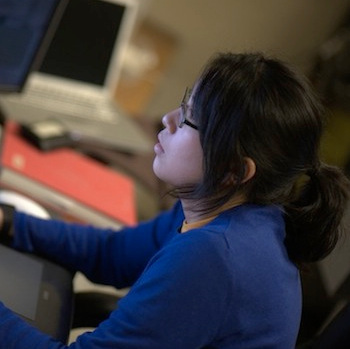
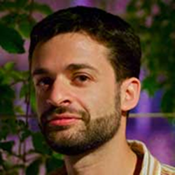

J. Nathan Matias
I make technology for civic participation and social change at the Center for Civic Media. I come from a postcolonial literature, tech startup and education charity background. I code along the whole web stack and am happy to discuss about anything from javascript to database optimisation. I like dataviz, do basic-level natural language processing and play with unusual construction kits. I am a Christian and am willing to help you find supportive communities for religion and politics at MIT. Equality and openness are my jam. I like listening.
David Mellis
I'm a first year PhD student in Leah Buechley's group, High-Low Tech, at the MIT Media Lab. My research interest is the relationship between digital information and physical objects, applied to manufacturing, electronics, and programming. I want to create tools and examples that help people to design, build, and program electronic devices. Before coming to the Media Lab, I earned a master's in interaction design at the Interaction Design Institute Ivrea (Italy) and taught at theCopenhagen Institute of Interaction Design (Denmark). I'm one of the creators of Arduino, an open-source hardware and software platform for electronic prototyping. I also have a bachelor's in mathematics from MIT.
Xiao Xiao
Born in China, grew up in New Orleans and at the Media Lab since 2005, where I started as a UROP and gradually leveled up to Master's student and then Ph.D. My main research involves a baby grand Disklavier piano in my office, which I often play during the wee hours of the night. I would be thrilled to jam with you if you're a musician as well.
Pol Pla
I am a graphic designer and computer scientist from Barcelona working at the Fluid Interface group. I build new types of displays that enable novel ways to visualize and interact with data and that can be leveraged for aesthetic purposes as well. I am all about design and art, so please let me know if I can be of any help regarding design in or outside the lab. Oh, and I love cooking!
Tiffany Tseng
I am a mechanical engineer developing new types of physical construction kits for kids in the Lifelong Kindergarten Group. In particular, my research focuses on documenting children's design process to make it easy for them to share what they create and reflect on their designs. In my spare time, I am a DJ for WMBR, MIT's radio station (http://hifilofiwmbr.tumblr.com/). If you're interested in learning about how to get involved with radio at MIT or just want to know about the local music scene, talk to me!
Ricarose Roque
I am a student from Lifelong Kindergarten. My interests are in broadening participation in computing, to empower everyone, especially young women and youth from underrepresented minorities in computing, in not just being consumers of technology, but also creators of their own technology. I contribute to the Scratch project, studying and designing ways for young people to create, learn, and collaborate in the Scratch online community. I'm also involved in the Graduate Women Association of MIT, leading its mentoring program to connect grad women to MIT alums and faculty. I love eating all kinds of food, especially Filipino and Mexican food which are in abundance in my hometown of Los Angeles. I am also a fan of craft beers. I live in Cambridge with my husband. I'm happy to talk and listen about anything really!
Eric Rosenbaum
I work on empowering people's creativity using technology in the Lifelong Kindergarten group. I like to combine music, improvisation, play and learning. You might remember me from such hits as the MaKey MaKey invention kit (banana pianos!), the Singing Fingers app (finger paint with sound!), the Glowdoodle web site (paint with light!), and MmmTsss looping software (pretty much just mouth noises!). I hack in a variety of media including OpenFrameworks, Processing, Arduino and terrible, terrible PHP code. I enjoy brainstorming and helping people learn.
Sayamindu Dasgupta
I work on enabling children to program with data, especially online data, at the Lifelong Kindergarten group. Most of my work is based on Scratch, and I am currently helping with the implementation of Scratch 2.0. I like to program, and I come from the Free and Open Source Software community, having worked as a software developer for the One Laptop per Child project, and as a developer/translator for the GNOME project. I love to explore Cambridge and the greater Boston area, especially during the summer on a bike, and I would be happy to point you to interesting places in Cambridge, especially from an international student's perspective. I grew up in Kolkata, India.
David Sengeh
I design prosthetic sockets through CAD/CAM processes as a first yr PhD in Biomechatronics. I also run an international NGO called Global Minimum (GMin) and we are focusing on enabling and empowering young innovators in Sierra Leone. See innovatesalone.org. I play soccer with the MIT club soccer, do stuff with a guitar here and there and travel loads within US and abroad.
David Robert
David Robert lives in Chinatown and designs robots for children as part of a $10M NSF Expeditions Grant looking into Socially-Assistive-Robotics together with Yale, Stanford and USC. He's into art and music making, food, fun people, trying ridiculous stuff, going on adventures and learning by doing. I'm psyched to show you some spots around Cambridge and Boston that can help balance your MIT universe with the real world.
Edwina Portocarrero
Micah Rye
Todd Farrell
I develop terrain adaptive robotic prostheses in the Biomechatronics Group.